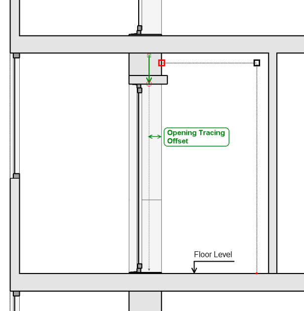

The lesser the size of an aperture, the higher the sensitivity of a contour tracing and the longer the tracing time.
'Tracing Sensitivity' means here the ability to detect contour's small details. Tracing procedure obviously ignores twist's and turns of a contour being traced in case if the size of those twists and turns is less than an aperture size.
This height should be above the highest opening of a closed space being traced, but below ceiling level of a mentioned space.
In case if the wall is not completely flat, the value of offset should be greater than wall's maximum surface offset and less than or equal to a minimal assumable distance to a closest 'oposite' wall.
This setting is needed only if openings tracing is enabled.

This value is used for openings tracing only.
Openings tracing procedure offsets from wall's surface, then 'looks' down from this position seaching for possible intersections with opening's bounding faces.
When this option is enabled, 'Zone Tool' uses material of an element under pointer position as zone's floor material and material of a first successfully detected vertical face as zone's wall material. This feature is enabled only when 'pick internal point' mode of 'LSS Zone Tool' is active.